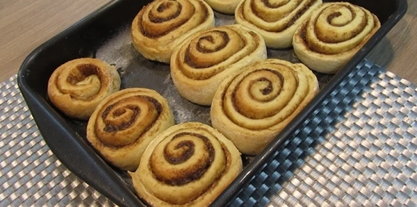

Cinnamon Rolls
Os cinnamon rolls, famosos pães de canela clássicos dos Estados Unidos e países nórdicos, têm conquistado cada vez mais brasileiros. Seja no café da manhã, à tarde ou na hora da sobremesa, esses rolinhos adocicados são perfeitos para adoçar o dia. O doce surgiu na Suécia na década de 1920, e é tão popular por lá que tem até uma data comemorativa: 4 de outubro, o dia do Kanelbulle (bolo de canela, em português).
Cinnamon Roll (enroladinho de canela) é muito famoso nos Estados Unidos, mas o doce surgiu na Suécia nos anos 20 do século XX, no país escandinavo o doce é chamado Kanelbulle. De acordo com a história a criação se deu pela escassez de ingredientes em decorrência da primeira guerra mundial.
A guerra gerou uma escassez de produtos e alimentos, com isso os suecos criaram o doce com os ingredientes que estavam a disposição no momento, farinha de trigo, leite, açúcar, manteiga ou margarina e, por vezes, também cardamomo. O recheio, pode ser feito com especiarias, frutas e canela. Os doces são polvilhados com açúcar grosso, comum na Escandinávia (conhecido na Suécia por pärlsocker) e pincelados com ovo, antes de irem ao forno.
Ingredientes
| ESPONJA | |
|---|---|
| Farinha de Trigo | 150g |
| Água mineral | 100g |
| Fermento biológico seco | 4g |
| MASSA | |
| Esponja | 254g |
| Farinha de trigo | 250g |
| Leite Integral | 100g |
| Sal refinado | 5g |
| Açúcar refinado | 50g |
| Ovo | 50g |
| Manteiga sem sal | 40g |
Modo de Preparo
Pré-fermento
Pese todos os ingredientes da esponja e coloque-os em uma tigela de vidro e misture todos até formar uma bola de massa. Deixe descansar por 30 a 60 minutos. Precisa dobrar o volume e estar cheio de bolhas.
Recheio
são 40 g de açúcar refinado, 40 g de açúcar mascavo e 4 g de canela em pó. Misture bem até ficar com uma cor bem uniforme. Reserve
Cobertura
São 70 g de cream cheese e 25 g de manteiga sem sal amolecida. Misture um pouco, adicione 50 g de açúcar de confeiteiro. Se você não tiver o açúcar de confeiteiro, é só bater o açúcar refinado no liquidificador. Use um batedor de arame (fouet) para misturar Você pode adicionar um pouco de leite integral para amolecer, caso precise. Para finalizar, acrescente uma colher de chá de extrato de baunilha,e misture até incorporar tudo. Reserve.
Massa
Adicione todos os ingredientes da massa, menos a manteiga e bata com o gancho em velocidade baixa até ficar homogênea, assim que chegar nesse ponto adicione a manteiga e deixe bater em velocidade média até a massa chegar em ponto de véu. Chegou no ponto certo, tire a massa do bowl da batedeira e coloque em outro bowl untado com pouquíssimo óleo e deixe descansar por mais 30 a 60 minutos coberto por papel plástico, ou até que dobre de tamanho. Você pode untar uma assadeira com manteiga ou forrar com papel manteiga. Tamanho da assadeira 35 por 35 centímetros.
Retire o plástico com cuidado e transfira a massa para a bancada. Na bancada espalhe bem pouco óleo e com a ponta dos dedos, retire o gás que se formou durante a fermentação. Vamos usar um rolo para abrir a massa em formato de retângulo Passe o rolo sempre do meio até as extremidades, com cuidado para não rasgar.
Agora vamos colocar 40 g de manteiga sem sal amolecida do recheio. Espalhe bem para que toda massa fique com uma camada uniforme de manteiga. Deixe uma faixa mais larga sem manteiga na parte superior. Adicione a mistura de açúcar com canela sobre a massa. Enrole a massa a partir da base com bastante cuidado. Não deixe muito frouxa, mas se apertar demais o miolo do rolinho pode subir durante a fermentação.
Sele bem a emenda com a ponta dos dedos Corte o rolo de massa usando uma faca. Divida em 9 pedaços iguais de aproximadamente 3 a 4 centímetros cada um. Corte com cuidado para manter o formato em espiral. Posicione todas as peças na assadeira com aproximadamente 2 dedos de distância entre elas. Cubra e deixe fermentar novamente por 30 minutos. Ligue o forno em 180 ºC para iniciar o pré-aquecimento. Mantenha a temperatura em 180 ºC por 12 a 15 minutos.